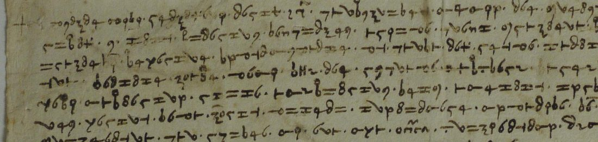

At a glanceCiphertext-only break · none (key obtained, text not read)
- The letter
- Sienese envoys on a journey to the “Magnificis et potentibus dominis Prioribus [et] Capitaneo Civitatis Senarum”; signed by one ending “Marco”, perhaps at Rome; undated, before 1429.
- Where
- Archivio di Stato di Siena, Concistoro 2308, fasc. 2, no. 14; DECODE R4802, catalogued “1500–1599” with no status.
- The cipher
- Italian, one sign per letter with a few extra signs for e, o, i and a, word points kept, and code signs for persons and a number (<7H>, <Z7>, (420)).
- How it was deciphered
- A plain search stuck; three hand cribs on repeated words found the key, and the staged annealing search later reached the same key with no crib.
- What it says
- The envoys report a two-hour talk with a servant of <7H> and the “gielosia” of Carlo Malatesta and others; Tuscany might join “the three powers” in open war on <Z7>.
- Still open
- The letter as a text: 436 signs in doubtful words, 161 unread, the codes, and the date. The reading audit of 22 October 2026 kept lines 1–6 as read; checked on 23 October with every doubtful word counted as a hole, they too fail (no clean sentence), so the whole page is decoded, not read.
This letter was filed on this site until 14 October 2026 with the rest of the Sienese bundle of cipher letters, in which each letter has its own key. The other letters whose keys were found are different ciphers, each with its own page: no. 25, no. 18, no. 4 (Borghesi, 1456) and nos. 6 and 24 (deciphered by George Lasry); the unread pieces, including Meister’s unphotographed no. 1 of 1421, are on the bundle’s page.
01The letter and its key
A whole page in cipher, 23 lines and a subscription: 1,495 signs in words divided by points. A plain annealing search stuck on pseudo-Italian; three hand cribs on repeated words (vostra, stato) found the key, and the staged search later reached the same key with no crib. Reading it on the image split two glyphs the first transcription had merged (an o with a stroke in from the left is m, with a stroke out to the right d) and two more (a compact 8 is v, a tall looped one n). 876 of 1,495 signs (58.6%) are in words read as sense, 436 (29.2%) in words with a doubtful letter, 161 (10.8%) unread, and 22 are code signs.

02What it says
… per la gracia di dio noi arivamo qui [h]ieri da sera salvi e […] la nostra compa(n)gnia … significhiamo a la Signoria vostra come questa matina, trovandosi Domenico con uno servidore di <7H> […] a ragionare per spacio da ore due … ancora afferma l’amico vostro che Carlo [M]alatesti e ogni altro sono in questa medesima gielosia … L’Altissimo acresca e conservi la magnifica Signoria vostra, a la quale umilmente ci racomandiamo.
This is a partial reading: most of its words rest on look-alike sign classes (Q/Q4, 8/TH, P/PHI; a/i, u/n, o/i) that the DECODE image, at about 15–20 pixels a sign, does not separate, so the sense below is a gist and the letter counts as decoded, not read. The envoys arrived “yesterday evening” with their company. Domenico spent two hours with a servant of a lord written <7H>, who is displeased with an enterprise “given by <Z7> to (420)”; Carlo Malatesta and the others share the same jealousy; they think Siena and the rest of Tuscany, united with “the three powers”, could openly make war on <Z7>; <7H> is in the field and may yet come to terms. The subscription names Rome as the place of writing and a signatory ending “Marco”. Carlo Malatesta of Rimini died in 1429, so the letter is no later; the wars of 1409–14 and 1423–24 are the candidates. It is the one piece in the bundle that could be close to Meister’s no. 1 of 1421, but it carries no date and 1421 cannot be claimed for it.
03What remains
- 436 signs in doubtful words and 161 unread, mostly the first lines, lines 13–15 and the subscription, where the signs are small at the DECODE resolution. Re-checked 23 October 2026: DECODE R4802 fetched again (two images, nothing attached); lines 7–26 written out as a partial reading (
transcripts/no14_L07-L26_reading.md) and scored, with one clause in seven clean on explicit holes; lines 1–6 none. The share of letters resting on look-alike signs is above what a reading may carry; only a better image of the original in Siena would settle them. Lines 8–26 have not yet been compared sign by sign with the image in this pass. - The codes <7H>, <Z7>, (420) and a circled sign are not identified; the date is not fixed.
Full texts
The transcription and the decryption of every document on this page, so that the reading can be used and checked. Short files are shown here; all are in the repository.
Siena, Concistoro 2308 fasc. 2 no. 14 (DECODE R4802), before 1429: lines L01-L06 decoded, not read
Sienese envoys on a journey to the Priori and Capitano of Siena: they arrived safely, and report Domenico's two hours' talk with a servant of <7H>, the friend's word that Carlo Malatesti and others share the same jealousy, Tuscany united with the three powers, and war with <Z7>; <7H> is at Naples. Key recovered ciphertext-only; the second reading pass (no14_reading2.txt) marks doubtful and unread words.
A mechanical decode with holes in most sentences: shown so that the transcription and the key can be checked and improved, not as a reading.
Transcription: no14b.txt
Transcription: no14_signs.tok
Decryption: no14_reading2.txt
Decryption: no14_reading.txt
Siena, Concistoro 2308 fasc. 2 no. 14 (DECODE R4802), before 1429: lines L07-L26 decoded, not read
A mechanical decode with holes in most sentences: shown so that the transcription and the key can be checked and improved, not as a reading.
Transcription: no14b.txt
Transcription: no14_signs.tok
Decryption: no14_reading2.txt
Decryption: no14_reading.txt
Key: key14.txt
04Sources
- Archivio di Stato di Siena, Concistoro 2308 fasc. 2 no. 14: DECODE R4802.
- A. Meister, Die Anfänge der modernen diplomatischen Geheimschrift (Paderborn 1902), pp. 50–51, on the bundle.
Manuscript rights: Archivio di Stato di Siena.
Transcriptions, key, readings and validation: targets/siena14/; the solvers are in targets/siena1421/.